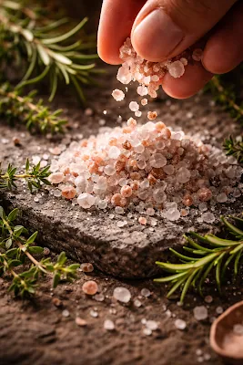

L’Élixir de Vie Cristalline : Redécouvrir la Puissance du Sel Véritable
Par Chest0 · 9 mars 2026
Introduction
Depuis la nuit des temps, le sel est le symbole de la conservation, de la pureté et de la sagesse. Nous portons l'océan en nous : nos larmes, notre sueur et notre sang sont salés. Pourtant, aujourd'hui, le sel est devenu l'ennemi public numéro un, accusé de tous les maux cardiovasculaires. Mais de quel sel parlons-nous ? Entre le chlorure de sodium industriel "mort" et le cristal de sel sauvage "vivant", il existe un monde. Apprendre à utiliser le sel, c'est apprendre à gérer l'électricité de son propre corps.
Problème
Le problème ne vient pas du sel en soi, mais de sa dénaturation et de son omniprésence cachée.
Le sel raffiné : Blanc, fluide, mais dépourvu de ses 80 oligo-éléments originels. C'est un produit chimique agressif.
Le sel caché : 80 % de notre consommation provient des produits transformés (pains, plats préparés, conserves), créant une surcharge que le rein ne sait plus gérer.
La déshydratation cellulaire : Trop de mauvais sel retient l'eau à l'extérieur des cellules (oedèmes) tout en assoiffant l'intérieur de la cellule.
Résultat : hypertension, rétention d'eau, fatigue rénale et extinction des signaux nerveux.
Promesse
Utilisé comme un rituel de minéralisation et non comme une addiction gustative, le sel de qualité peut :
Rallumer l'étincelle nerveuse : Améliorer la transmission des messages entre tes neurones.
Hydrater réellement : Permettre à l'eau de pénétrer là où elle est utile.
Soutenir les glandes surrénales : Les grandes gestionnaires de ton stress.
Bénéfice
En remplaçant le sel de table classique par un sel de terre ou de mer intégral, tu vas ressentir :
Une meilleure digestion : Le sel est le précurseur de l'acide chlorhydrique dans ton estomac.
Moins de crampes : Un équilibre électrolytique restauré (sodium/magnésium/potassium).
Une vitalité stable : Moins de "coups de mou" l'après-midi dus à une chute de tension ou de minéraux.
Une peau plus saine : Par une meilleure élimination des toxines via la lymphe.

Pourquoi ce remède est efficace
Le corps est une pile électrique. Pour que le courant circule, il faut des électrolytes.
Le sel complet (non raffiné) contient non seulement du chlorure de sodium, mais aussi du magnésium, du calcium, du potassium, du soufre et de l'iode naturel.
La pompe sodium-potassium : C'est elle qui gère l'entrée des nutriments et la sortie des déchets de chaque cellule.
L'équilibre acido-basique : Contrairement aux idées reçues, un bon sel aide à tamponner l'acidité excessive du corps en soutenant les reins.
Les bienfaits
Voici les piliers d'une consommation consciente de sel :
Soutien des Surrénales : En période de grand stress, le corps "pisse" ses minéraux. Un apport en bon sel empêche l'effondrement de la thyroïde et des surrénales.
Antibactérien Naturel : Le sel purifie le milieu intérieur et aide à lutter contre la prolifération de certains pathogènes.
Sommeil : Une pincée de sel marin dans un verre d'eau avant de dormir peut stopper les réveils nocturnes dus aux pics d'adrénaline.
La recette : L'Élixir d'Eau de Mer (Sole)
Plutôt que de saler tes plats à l'aveugle, prépare cette solution saturée pour minéraliser ton eau de boisson.
Ingrédients :
1 bocal en verre avec couvercle non métallique.
1/3 de cristaux de sel gris (Guérande) ou de sel rose (Himalaya).
2/3 d'eau filtrée ou de source.
Protocole de préparation :
La Saturation : Remplis le bocal de sel aux 1/3, puis ajoute l'eau.
Le Repos : Laisse reposer 24h. Le sel va se dissoudre jusqu'à ce que l'eau ne puisse plus en absorber (saturation à 26%). S'il reste des cristaux au fond, c'est parfait.
L'Utilisation : Ne jamais utiliser d'objet en métal (qui oxyde le sel). Utilise une cuillère en bois ou en plastique.
Comment l’utiliser
Chaque matin, ajoute une cuillère à café de cette solution (le "Sole") dans un grand verre d'eau tiède avec un filet de citron.
Hypertension : Si tu souffres d'hypertension sévère, demande l'avis de ton thérapeute. Cependant, le passage du sel blanc au sel gris améliore souvent la situation.
Insuffisance rénale : Une surveillance est nécessaire car le rein est la porte de sortie du sel.
Équilibre : Le sel appelle le potassium. Consomme toujours beaucoup de végétaux (verts) en parallèle pour maintenir l'équilibre.
Conclusion & appel à l’action
L’élixir au sel n’est pas une solution miracle immédiate.
C’est un rituel de reconnexion, une manière d’envoyer un message clair à ton corps : je te soutiens, je t’écoute, je te respecte.
👉 Pour rappel, si la nature ne l’a pas créé, ne le buvez pas. Le sel de table "E535" (anti-agglomérant) n'est pas une création de la nature.
Si tu souhaites aller plus loin dans cette approche naturelle du bien-être, je partage régulièrement :
des élixirs ciblés,
des rituels santé simples,
des guides pratiques pour renforcer le corps et apaiser le mental.
📚 Je suis auteur bien-être sous le pseudo Chest0 JM.S, et mes ouvrages sont disponibles sur Amazon.